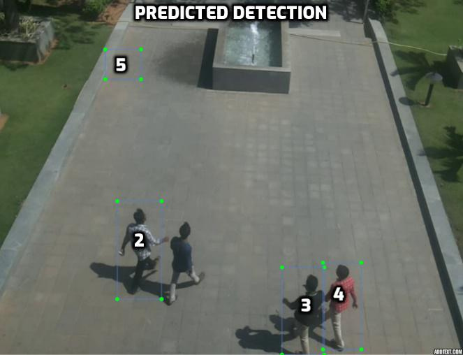
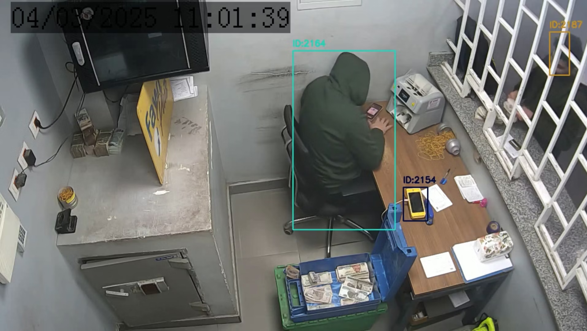

AC-MOT
Computer Engineering and Artificial Intelligence Department


Multi-Object Tracking: Keep the Same ID
 Frame t
Frame tThe person beside the white car has ID 1.
 Frame t + k
Frame t + kThe same person now has ID 8 — an identity switch.
“What objects are here?”
“Which object is which, over time?”
Where Multi-Object Tracking Is Used
 Traffic
Traffic Public spacesPedestrian safety
Public spacesPedestrian safety Drone video
Drone videoCount cars and measure traffic flow.
Follow crowds in stations and malls.
Watch people near roads and crossings.
Our focus: drone video — tiny objects and a small onboard computer.
IoU vs NMS — What Is the Difference?
A measurement: how much two boxes overlap. One number from 0 to 1.

A process: it removes duplicate boxes. It uses IoU to see which boxes overlap too much.
TP, FP, FN and TN: The Four Outcomes

FALSE POSITIVE: a box in the wrong place (IoU 0.22).

FALSE NEGATIVE: the bird is there, but no box.
| Outcome | Meaning |
|---|---|
| TP · true positive | a real object, found correctly |
| FP · false positive | a box, but no real object there |
| FN · false negative | a real object, but no box |
| TN · true negative | empty area, correctly left empty |
Identity Switches (IDS)
Before occlusionBefore being hidden: ID 4.
After occlusionAfter: the same person, now ID 8 — one switch.
What it counts
How many times an object suddenly gets a wrong new ID.
Lower is better
0 switches means every object kept its number.
Common cause
The object is hidden for a moment, then comes back.
Related Work: Detectors and Trackers
What we learned from our IEEE ICMISI 2026 survey: detector and tracker families, benchmarks, datasets, and the speed-vs-accuracy trade-off that showed us the gap.
Which Tracker Switches IDs the Least?
SORT, DeepSORT, ByteTrack or OC-SORT? Hint: the most accurate tracker on the last slide is not the winner. The answer is on the next slide.
Benchmark Datasets
| Dataset | Size | Camera | Why it matters here |
|---|---|---|---|
| COCO (2014) | 330K images, 80 classes | ground photos | the standard for scoring detectors (mAP) |
| MOT17 / MOT20 | 14 and 8 videos | street CCTV | the standard pedestrian tracking benchmark |
| KITTI (2012) | 15K stereo pairs | car roof | driving, with LiDAR and GPS |
| VisDrone2019 | 288 videos, 262K frames | drone, 5–120 m high | very small objects, heavy occlusion |
| UAVDT NEW | drone video | drone | our zero-tuning generalization test |



The Problem: One Fixed Threshold Cannot Fit Every Scene
DIFFICULTCrowding and objects hiding each other.
DARKLow contrast and shadows.
A few clear objects.
Step 1: Measure Scene Complexity (SCI)
1 · CROWD2 · EDGES 3 · TINY4 · NIGHT
3 · TINY4 · NIGHT| Clue | Weight | How it is measured | What it warns about |
|---|---|---|---|
| crowd | 0.30 | boxes in the last frame ÷ 30 | many objects overlap and get mixed up |
| tiny | 0.30 | share of boxes smaller than 32 × 32 px | real objects score too low to keep |
| edges | 0.20 | Canny edge pixels ÷ 255, scaled by 0.14 | busy background makes ghost boxes |
| night | 0.10 | average brightness below 80 | contrast falls, everything gets weaker |
| blur | 0.05 | Laplacian variance below 180 | smeared objects, a shaking camera |
Seeing Three Clues on Real Pictures


Calm sky: edge density 0.021


Busy parking lot: edge density 0.295
 Day
Daymean gray 110.6 → night flag 0
 Night
Nightmean gray 40.5 → night flag 1
 Sharp
SharpLaplacian variance 4,074 → blur flag 0
 Blurred
BlurredLaplacian variance 4 → blur flag 1
Choosing the Test Domain: Drone Surveillance
From high up, a person is a blob about ten pixels wide.
The same kind of scene at night: contrast falls away.
Minutes later, an open road with large, easy objects.
The VisDrone2019-MOT Benchmark
| Resolution | 1920 × 1080 (Full HD) |
| Altitude | 5 to 120 m above the ground |
| Camera angle | straight down to tilted |
| Object size | 5 to 30 pixels wide — extremely small |
| Conditions | daylight, low light, motion blur |
| Tuning split NEW | validation · 7 sequences |
| Final test split NEW | test-dev · 17 sequences · 6,635 frames |
| Density | 32.4 objects per frame (215,014 filtered boxes) |
Results and Ablation Study
The 17-sequence development ablation. Four systems, one fixed YOLOv8n detector, one part added at a time.
Stage 2: Constrained Optimization
Stage 1 raised accuracy, but ID switches went up too. Stage 2 stops hand-tuning: a search picks the settings under two strict rules. Stage 3 looks for a better balance and tests on a new dataset.
Higher MOTA = a Better Tracker?
Guess before the next slide. Keep one eye on the ID switches, not only on the accuracy bars.
Which Clue Did the Search Trust Most?
Crowd, tiny objects, edges, night or blur? Our hand-set guess gave crowd and tiny the most weight. Make a guess — the answer is coming.